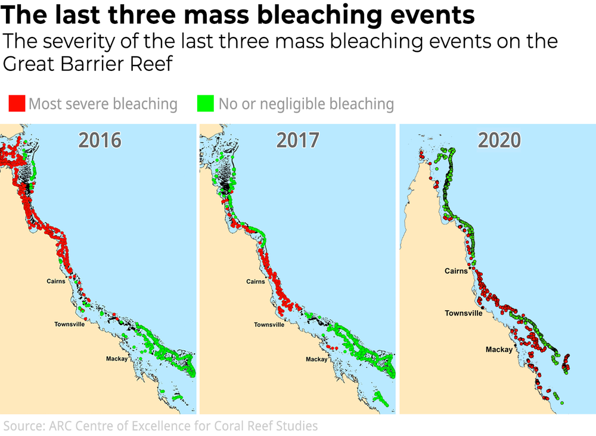

History of the Reef

The Great Barrier Reef has been the focus of various conservation efforts over the years, recognizing its immense ecological significance. One of the most pivotal initiatives was the creation of the Great Barrier Reef Marine Park in 1975, which protects over 344,000 square kilometers of reef. Managed by the Great Barrier Reef Marine Park Authority (GBRMPA), the park aims to balance conservation with sustainable activities such as tourism and research. In 2015, the Reef 2050 Plan was introduced as a long-term strategy to combat threats like water pollution, coral bleaching, and climate change. The plan focuses on improving water quality through better land management practices and reducing agricultural runoff, which significantly impacts the reef's health.
Despite these efforts, the reef continues to face significant challenges. The impacts of climate change, including rising sea temperatures and ocean acidification, have led to widespread coral bleaching. Furthermore, agricultural runoff from fertilizers and pesticides continues to damage coral ecosystems, exacerbating the problem. While initiatives like the Reef 2050 Plan and the Australian Government’s Reef Trust have made strides, the slow progress is often attributed to enforcement challenges and the complexity of addressing multiple environmental threats. Nevertheless, ongoing efforts by governments, local communities, and conservation groups remain crucial in preserving the reef’s delicate ecosystems for future generations.
If you're interested in supporting the reef, there are many ways you can get involved. Browse through the sections on community-led conservation, political initiatives, donations, and petitions to learn how you can make a difference.